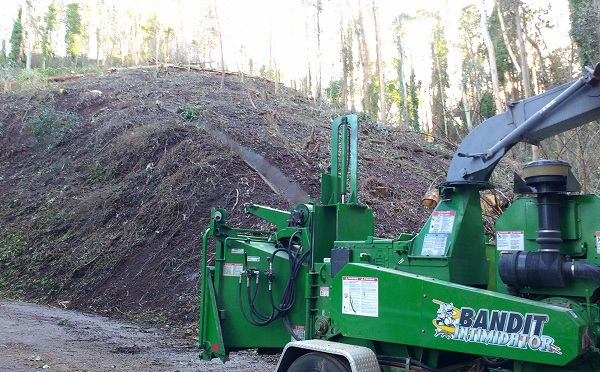

Mount Sutro faces environmental challenges from invasive species like eucalyptus, which increase fire risks and disrupt biodiversity. Urban encroachment fragments habitats and introduces pollution, while climate change affects rainfall and temperature patterns. Efforts to remove non-native species and restore native habitats are crucial, but balancing conservation with public access remains a key challenge.

Upkeep
Sutro Stewards has historically maintained over 20 habitat restoration test sites on Mount Sutro. These original sites were mostly located along the various trails of Mount Sutro. Throughout the years we were able to see which sites performed the best and what native plants thrived in which areas